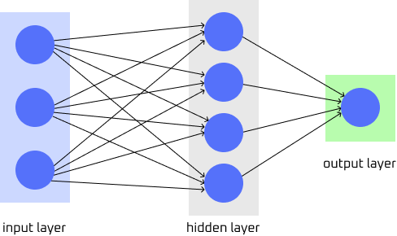

Feedforward Neural Network (FNN) is a neural network where information flows in a single direction. All input goes through the hidden layer and then to the output layer without any feedback or loops. FNNs process inputs independently, relying on back propagation where the error is propagated back through the network. The weights are then updated and adjusted using gradient descent. Gradient descent is used often to train neural networks in minimizing errors between prediction and actual results.
FNNs are commonly used for linear, straightforward tasks such as classification and regression. Applications of FNNs include pattern recognition tasks such as image and speech classification.
Figure: Simplified diagram of a FNN. Image provided by Serena Ngo. See credits for references.
Feedforward neural networks are very accurate and precise when it comes to classification and prediction. They "recall" learnt data well with a high ratio of true positive predictions to actual positives.
However, like al neural networks, FNNs are resource intensive and require a lot of computational power and data. In addition to this, can fall victim of overfitting with small datasets. Lastly, like with all neural networks, no one truely knows what happens within the hidden layer. This area is commonly known as a "black-box" model as there are limited interpretability on what occurs as the networks are trained.